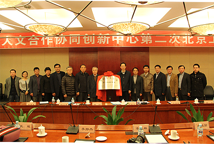
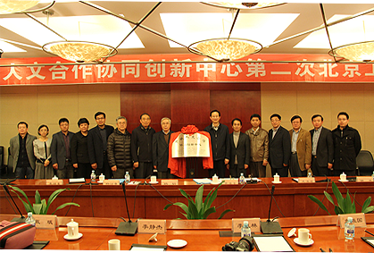

用户登录
欢迎 某某某 登陆网站！请参与
即时通讯
意见反馈
搜索
关键字
用户登录

 

1
2
3
4
5
我校召开“中俄人文合作协同创新中心”培育组建...
我校召开“中俄人文合作协同创新中心”...
6月19日下午2：30，“中俄人文合作协同创新中心”培育组建工作 汇报会在我校外事处多功能厅举行。
省教育厅副厅长辛宝忠，省教育 厅科技处处长韩延平、副处长王明福，我校文科学院院长、主管科研
副院长，中俄学院、俄罗斯研究院、俄罗斯语言文学与文化研究中心主任、 文化哲学研究中心负责人......[详细]
中心新闻
业内新闻
通知公告
 中俄人文合作协同创新确立的原因进行了阐述 2014-10-24
中俄人文合作协同创新确立的原因进行了阐述 2014-10-24- 作为中俄全面战略协作伙伴的重要领域和最重要的支撑点 2014-10-24
- 工作的计划进行了扼要的汇报 2014-10-24
- 国家在涉及中俄人文合作战略层面尚有许多问题急需解决 2014-10-24
- 黑龙江大学有责任、有能力为中俄人文战略做出贡献 2014-10-24
中文数据库
- 俄罗斯大全俄语数据库
- 社科与人文科学期刊
- 莫斯科大学期刊子数据库
- 《事实与论据》期刊
- KODEKS俄罗斯法律数据库
- 俄罗斯科学在线数据库
- 科学电子图书室
俄文数据库
战略、文化领域数据库：
- 国务院发展研究信息网
教育领域：
- 中国教育和科研计算机网
法律数据库：
- 北大法意
- 北大法宝
教育领域
传媒领域
法律领域
战略领域
档案领域
文化领域
- 美国犹太事务著名学者希伯来联合学院洛杉...
- "东盟地区论坛预防性外交培训班"在南京大...
- Prof. Steven Windmueller：The
- 中心相关平台派人参加新加坡“海洋边界划...
- 教育部“2011计划”研究项目组到中心调研
- 国防部外事办公室国际安全合作中心主任...
- 中心派员参加于布鲁塞尔举办的“东亚海洋...
旅游领域
- 美国犹太事务著名学者希伯来联合学院洛杉...
- "东盟地区论坛预防性外交培训班"在南京大...
- Prof. Steven Windmueller：The
- 中心相关平台派人参加新加坡“海洋边界划...
- 教育部“2011计划”研究项目组到中心调研
- 国防部外事办公室国际安全合作中心主任...
- 中心派员参加于布鲁塞尔举办的“东亚海洋...
- 美国犹太事务著名学者希伯来联合学院洛杉矶分院院长Prof. Steve
- “东盟地区论坛预防性外交培训班”在南京大学举办
- Prof. Steven Windmueller：The
- 中心相关平台派人参加新加坡“海洋边界划界实践研讨会”
- 教育部“2011计划”研究项目组到中心调研
- 国防部外事办公室国际安全合作中心主任周波大校作“当前涉海军事斗争...
- 中心派员参加于布鲁塞尔举办的“东亚海洋安全国际会议”
更多>>
国内专家
- 美国犹太事务
- 东盟地区论坛
- 中心相关平台
- 2011计划
- 国防部外事办公室
- 美国犹太事务
- 东盟地区论坛
国外专家
- 美国犹太事务
- 东盟地区论坛
- 中心相关平台
- 2011计划
- 国防部外事办公室
- 美国犹太事务
- 东盟地区论坛
- 美国犹太事务著名学者希伯来联合学院洛杉矶分院院长Prof. Steve
- “东盟地区论坛预防性外交培训班”在南京大学举办
- Prof. Steven Windmueller：The
- 中心相关平台派人参加新加坡“海洋边界划界实践研讨会”
- 教育部“2011计划”研究项目组到中心调研
- 国防部外事办公室国际安全合作中心主任周波大校作“当前涉海军事斗争...
- 中心派员参加于布鲁塞尔举办的“东亚海洋安全国际会议”
更多>>
- 美国犹太事务著名学者希伯来联合学院洛杉矶分院...
- “东盟地区论坛预防性外交培训班”在南京大学举办
- Prof. Steven Windmueller：The
- 中心相关平台派人参加新加坡“海洋边界划界实践...
- 教育部“2011计划”研究项目组到中心调研
- 国防部外事办公室国际安全合作中心主任周波大...
- 中心派员参加于布鲁塞尔举办的“东亚海洋安全国...